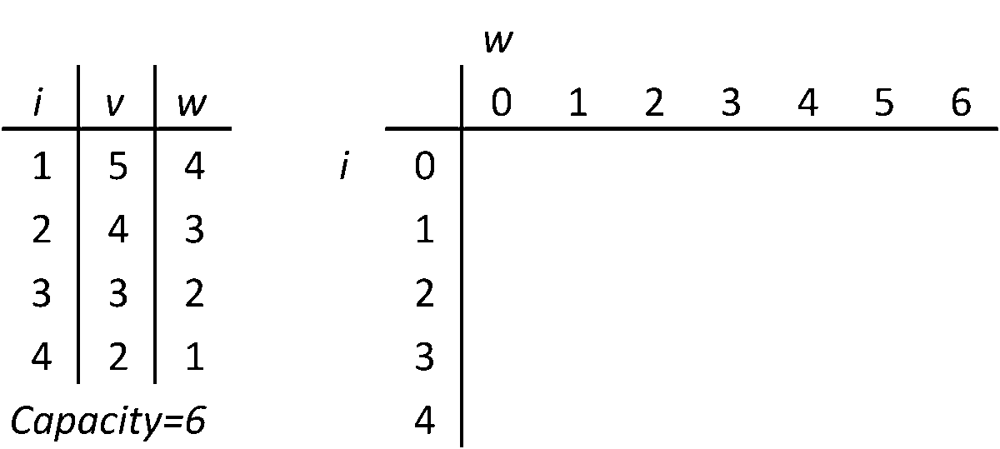

Introduction
Figure 1: Nvidia’s graphic processing unit (GPU) in Paris on Friday. Source: NBC NEWS
Nvidia, a global leader in graphics processing technology and AI computing, has seen remarkable growth, with its market value nearing $3 trillion, making it one of the largest companies in the United States. Founded in 1993, Nvidia revolutionized the tech industry with its innovative GPUs, initially leading the gaming market. Today, its technology is essential for artificial intelligence, data centers, and automotive advancements, giving it a near-monopoly status in AI hardware. This transformation underscores Nvidia's critical role in shaping the future of technology, powered by platforms like CUDA and bolstered by exponential demand growth—especially during the pandemic boom [1] Understanding Nvidia’s vast ecosystem highlights how advanced hardware combined with algorithmic innovation drives performance and transforms experiences worldwide. Key areas of Nvidia's impact include:
Company Profile[2]
- Date: 1993 – present
- Ticker: NVDA
- Share price: $131.29 (market close, May 23, 2025)
- Market cap: $3.20 trillion
- Annual revenue: $130.50 billion
- Earnings per share (prev. year): $2.94
- Sector: Information Technology
- Industry: Semiconductors & Semiconductor Equipment
- CEO: Mr. Jen-Hsun Huang
- Headquarters: Santa Clara
Key Products and AI Applications
- GeForce GTX and RTX series: Used primarily in gaming and professional workstation applications.[2]
- NVIDIA A and H series and DGX systems: Supports artificial intelligence (AI) and data center applications.[2]
- NVIDIA Tegra series: Designed for small devices such as car components, smartphones, and handheld electronics.[2]
- NVIDIA Mellanox ConnectX SmartNICs and Quantum InfiniBand: GPUs utilized in cloud applications, data storage, and machine learning.[2]
- CUDA, AI Enterprise, and Drive: GPUs tailored for software developers (DRIVE being specifically designed for developers of self-driving car software).[2]
- NVIDIA Broadcast: AI-powered app that transforms any room into a professional studio by enhancing audio and video quality with features like noise removal and virtual backgrounds [3].
- NVIDIA Clara: AI platform accelerating healthcare breakthroughs in medical imaging, genomics, and drug discovery [4].
- NVIDIA Jetson: AI edge computing platform consisting of a small form factor, high-performance build for IoT, robotics, and embedded systems, enabling real-time AI processing at the edge.[5]
Enhancing Nvidia’s Capabilities with Algorithms
In today’s digital age, the efficiency and effectiveness of technology services can be significantly enhanced through the strategic application of data structures and algorithms. This portfolio project explores the core functionalities of Nvidia’s innovative platforms, applying the theoretical knowledge and practical skills acquired from the course Algorithmic Problem Solving (APS). By using advanced algorithmic techniques and innovative data structures, this project aims to propose solutions to real-world computational and AI challenges.
This portfolio demonstrates how algorithms can optimize Nvidia’s technologies. Each example illustrates how smart problem-solving with algorithms can enhance operational smoothness and processing power across edge computing, GPU acceleration, and AI-driven platforms. Join me in this exploration as we bridge the gap between theory and practice, highlighting the profound impact of data structures and algorithms on cutting-edge technologies. Additionally, each case includes a thorough performance analysis to evaluate effectiveness.
Objectives üéØ
This portfolio focuses on applying core Data Structures and Algorithms (DSA) principles to real-world scenarios involving Nvidia technologies. The objectives include:
- Apply graph algorithms to optimize data flow and interconnectivity in GPU architectures.
- Use dynamic programming and greedy strategies to enhance memory management and caching efficiency in GPU-based computations.
- Leverage search and sorting algorithms for efficient AI model inference and retrieval systems.
- Utilize tree and heap structures to manage GPU resource allocation and priority scheduling tasks.
- Implement hashing and prefix trees (tries) for fast data indexing and lookup in edge devices like Nvidia Jetson.
üìà Business Use Cases ‚û°Ô∏è Algorithmic Solutions üß©
Nvidia’s business problems addressed here highlight the importance of algorithmic problem-solving:
1. GPU Resource Management üéÆ
Efficiently assigning tasks across available GPUs in data centers is crucial for maximizing throughput while minimizing energy use and latency. This becomes especially important when multiple AI tasks with different resource requirements are queued together.
Applied Algorithm: 0/1 Knapsack Problem – where each job is an item with weight (GPU usage) and value (priority or expected reward).
What is the Knapsack Problem?
The Knapsack Problem is a classic optimization problem. Given a set of items, each with a weight and value, the goal is to select items so that the total weight does not exceed a capacity limit while maximizing the total value. In the 0/1 Knapsack variant, items cannot be split — they are either taken or left.
Source: Wikimedia Commons
Time & Space Complexity
- Time Complexity:
O(nW)— wherenis the number of items andWis the total capacity of the knapsack. - Space Complexity:
O(nW)using a 2D DP array, orO(W)using a space-optimized 1D array.
While the knapsack problem is NP-complete, dynamic programming offers a pseudo-polynomial time solution that is efficient for moderate-sized inputs. Space optimization further enables real-time applications in resource-constrained environments like embedded GPU systems.
// 0/1 Knapsack Problem in C++ (Dynamic Programming)
#include <iostream>
#include <vector>
using namespace std;
int knapsack(const vector<int>& weights, const vector<int>& values, int capacity) {
int n = weights.size();
vector<vector<int>> dp(n + 1, vector<int>(capacity + 1, 0));
for (int i = 1; i <= n; ++i) {
for (int w = 0; w <= capacity; ++w) {
if (weights[i - 1] <= w) {
dp[i][w] = max(values[i - 1] + dp[i - 1][w - weights[i - 1]], dp[i - 1][w]);
} else {
dp[i][w] = dp[i - 1][w];
}
}
}
return dp[n][capacity];
}
int main() {
vector<int> weights = {2, 1, 3, 2};
vector<int> values = {12, 10, 20, 15};
int capacity = 5;
cout << "Maximum value: " << knapsack(weights, values, capacity) << endl; // Output: 37
return 0;
}
GPU Resource Management as a Knapsack Problem
Nvidia GPUs in data centers must run multiple AI workloads simultaneously. Each task requires some GPU memory and compute, and has a priority or value. Since GPU resources are limited, scheduling becomes a problem of selecting tasks that maximize total priority without exceeding resource limits — exactly like a 0/1 Knapsack Problem.
| Task | Memory Needed (GB) | Priority (Value) |
|---|---|---|
| A | 5 | 10 |
| B | 3 | 7 |
| C | 8 | 12 |
| D | 4 | 8 |
| E | 6 | 11 |
The goal is to select tasks fitting within a 16 GB GPU memory limit to maximize total priority, ensuring efficient GPU utilization and balanced workload scheduling.
Benefits of this approach
- Maximizes GPU resource utilization without overcommitment.
- Enables automated scheduling of high-priority AI workloads.
- Balances throughput and performance priorities dynamically.
- Supports real-time scheduling as workloads change.
This knapsack-based scheduling logic underpins Nvidia’s CUDA Multi-Process Service (MPS) and cloud GPU schedulers to optimize resource allocation dynamically across many clients and workloads.
2. Smart GPU Allocation using A* Search & Stable Marriage üí°
Allocating the right task to the right GPU at the right time isn't just about maximizing value — it's also about matching compatibility and predicting the best long-term scheduling decisions. To tackle this, we combine two elegant algorithms: A* Search (for optimal pathfinding) and the Stable Marriage Problem (for stable, preference-based matching).
What is A* Search?
A* (A-star) is a graph traversal algorithm that finds the shortest path between two nodes using both actual cost (g) and heuristic estimate (h), making it both optimal and complete. In our context, it's used to find the nearest or most optimal GPU given a task’s constraints (like current load, data location, energy cost, etc).

Source: Wikipedia - A* Search Algorithm
Time & Space Complexity
- Time Complexity:
O(E)whereEis the number of edges (can be exponential with bad heuristics) - Space Complexity:
O(V)whereVis the number of vertices
// A* Search Algorithm in C++
// A C++ Program to implement A* Search Algorithm
#include
using namespace std;
#define ROW 9
#define COL 10
// Creating a shortcut for int, int pair type
typedef pair Pair;
// Creating a shortcut for pair> type
typedef pair > pPair;
// A structure to hold the necessary parameters
struct cell {
// Row and Column index of its parent
// Note that 0 <= i <= ROW-1 & 0 <= j <= COL-1
int parent_i, parent_j;
// f = g + h
double f, g, h;
};
... Source: GeeksforGeeks - A* Search Algorithm [6]
What is the Stable Marriage Problem?
The Stable Marriage Problem finds a stable matching between two equally sized sets of elements given ranked preferences. In GPU scheduling, tasks and GPUs each have preferences (based on priority, load, or locality). The goal is to match them so that no task-GPU pair would rather be with each other over their current assignments.

Source: Wikipedia - Stable Matching Problem
Time & Space Complexity
- Time Complexity:
O(n2) - Space Complexity:
O(n2)
// Gale-Shapley Algorithm (Stable Marriage) in C++
#include
using namespace std;
// Checks if woman 'w' prefers 'm1' over 'm'
bool wPrefersM1OverM(vector> &prefer, int w, int m, int m1)
{
int N = prefer[0].size();
for (int i = 0; i < N; i++)
{
// If m1 comes before m, w prefers
// her current engagement
if (prefer[w][i] == m1)
return true;
// If m comes before m1, w prefers m
if (prefer[w][i] == m)
return false;
}
}
// Implements the stable marriage algorithm
vector stableMarriage(vector> &prefer)
{
int N = prefer[0].size();
// Stores women's partners
vector wPartner(N, -1);
// Tracks free men
vector mFree(N, false);
int freeCount = N;
while (freeCount > 0)
{
int m;
for (m = 0; m < N; m++)
if (!mFree[m])
break;
// Process each woman in m's preference list
for (int i = 0; i < N && !mFree[m]; i++)
{
int w = prefer[m][i];
if (wPartner[w - N] == -1)
{
// Engage m and w if w is free
wPartner[w - N] = m;
mFree[m] = true;
freeCount--;
}
else
{
int m1 = wPartner[w - N];
// If w prefers m over her current partner, reassign
if (!wPrefersM1OverM(prefer, w, m, m1))
{
wPartner[w - N] = m;
mFree[m] = true;
mFree[m1] = false;
}
}
}
}
return wPartner;
}
int main()
{
vector> prefer = {
{7, 5, 6, 4}, {5, 4, 6, 7}, {4, 5, 6, 7}, {4, 5, 6, 7},
{0, 1, 2, 3}, {0, 1, 2, 3}, {0, 1, 2, 3}, {0, 1, 2, 3},
};
vector wPartner = stableMarriage(prefer);
cout << "Woman Man" << endl;
int N = prefer[0].size();
for (int i = 0; i < N; i++)
cout << " " << i + N << "\t\t" << wPartner[i] << endl;
return 0;
}
GPU Task Scheduling using A* + Stable Matching
Combining A* with Stable Marriage offers a dual-layer strategy: A* is used to find the nearest or most optimal GPU candidates, and Stable Marriage then ensures fair and stable matching among those candidates and tasks based on mutual preferences. This hybrid strategy reduces bottlenecks and increases GPU utilization fairness in a dynamic environment.
Benefits of this approach
- Provides stable long-term GPU-task assignments without ping-ponging.
- Reduces search space by pruning suboptimal GPUs via A* heuristic.
- Ideal for clustered or distributed GPU farms with latency or bandwidth constraints.
- Balances local GPU availability and global task priority intelligently.
This approach is particularly useful in edge AI deployment, multi-GPU servers, and AI training farms where fair, efficient, and low-latency scheduling is crucial. Nvidia’s advanced datacenter schedulers often employ similar hybrid models under the hood for performance-aware matching.
3. Real-Time Recommendation Rankings üéØ
Delivering personalized, real-time recommendations is vital for engagement across platforms like streaming, retail, and gaming. NVIDIA Merlin leverages massive GPU power to process billions of interactions per second — but ranking those results meaningfully is the real challenge.
Applied Algorithm: PageRank – leveraging graph-based influence propagation for ranking user-item interaction networks.
What is the PageRank Algorithm?
PageRank is a graph-based algorithm that assigns importance to nodes based on their connectivity. Originally designed for ranking web pages, it models a "random surfer" who follows links. A node’s rank is determined by how many important nodes link to it, recursively. This makes it ideal for influence-based ranking in recommendation systems.

Source: Wikipedia - Page Rank
Time & Space Complexity
- Time Complexity:
O(KN)— whereKis the number of iterations andNis the number of edges in the graph. - Space Complexity:
O(V)— whereVis the number of nodes (users + items).
Thanks to its iterative nature, PageRank maps perfectly to CUDA for parallel GPU execution — enabling fast updates in dynamic graphs as user interactions stream in.
// Simplified PageRank implementation (Python-like pseudocode)
def pagerank(graph, damping=0.85, iterations=10):
N = len(graph)
ranks = {node: 1/N for node in graph}
for _ in range(iterations):
new_ranks = {}
for node in graph:
total = sum(ranks[neigh] / len(graph[neigh]) for neigh in graph if node in graph[neigh])
new_ranks[node] = (1 - damping) / N + damping * total
ranks = new_ranks
return ranksWhy PageRank for NVIDIA Merlin?
In real-time recommendation engines, users and items form a bipartite graph where interaction strength matters. PageRank naturally identifies influential items through indirect relationships — e.g., "users like me also viewed this" — providing context-aware ranking.
| User | Item Clicked | Interaction Strength |
|---|---|---|
| U1 | Item A | 1.0 |
| U2 | Item B | 0.8 |
| U3 | Item A | 0.9 |
These weighted edges form a graph input to PageRank, producing global rankings that reflect not just direct popularity, but contextual influence from similar users and indirect interaction paths.
Benefits of this approach
- Improves ranking relevance via indirect interaction paths.
- Enables real-time updates using CUDA-based parallelism.
- Resilient to spam or click-fraud (due to dampening factor).
- Supports graph embeddings and hybrid models in NVIDIA Merlin.
PageRank-based ranking enhances NVIDIA Merlin’s RecSys stack by providing stable, explainable recommendations that scale with GPU performance — optimizing both accuracy and latency in production environments.
4. GPU Memory Management Optimization ü߆
Efficient and dynamic management of GPU memory is critical in maximizing the throughput of AI workloads. With multiple simultaneous tasks allocating and freeing memory blocks, fragmentation and slow allocation can degrade performance. Segment Trees enable real-time tracking and querying of memory intervals to optimize allocation and minimize fragmentation.
Applied Algorithm: Segment Tree – a data structure optimized for interval queries and updates.
What is a Segment Tree?
A Segment Tree is a binary tree data structure that allows efficient querying and updating over intervals or segments of an array. It supports operations like finding minimum, maximum, or sum within a range in O(log n) time, making it well-suited for dynamic interval management problems such as GPU memory allocation.

Source: GeeksforGeeks
Time & Space Complexity
- Time Complexity:
O(log n)per query or update, wherenis the size of the memory address space. - Space Complexity:
O(n)to store the segment tree.
This efficiency allows real-time memory management in GPUs, enabling fast allocation and deallocation with minimal overhead even under heavy multitasking scenarios.
// Simplified Segment Tree for GPU Memory Allocation in C++
#include <iostream>
#include <vector>
using namespace std;
class SegmentTree {
vector<int> tree;
int size;
public:
SegmentTree(int n) {
size = n;
tree.assign(4 * n, 0); // Store free/used status of segments
}
void update(int idx, int start, int end, int pos, int val) {
if (start == end) {
tree[idx] = val;
return;
}
int mid = (start + end) / 2;
if (pos <= mid)
update(2 * idx + 1, start, mid, pos, val);
else
update(2 * idx + 2, mid + 1, end, pos, val);
tree[idx] = tree[2 * idx + 1] + tree[2 * idx + 2];
}
int query(int idx, int start, int end, int l, int r) {
if (r < start || l > end)
return 0;
if (l <= start && end <= r)
return tree[idx];
int mid = (start + end) / 2;
return query(2 * idx + 1, start, mid, l, r) + query(2 * idx + 2, mid + 1, end, l, r);
}
};
int main() {
int memorySize = 16; // 16 GB GPU memory blocks
SegmentTree segTree(memorySize);
// Allocate memory at block 3
segTree.update(0, 0, memorySize - 1, 3, 1);
// Query how many blocks are allocated between 0 and 7
cout << "Allocated blocks in range [0,7]: " << segTree.query(0, 0, memorySize - 1, 0, 7) << endl;
return 0;
}
Applying Segment Trees to NVIDIA GPU Memory Management
NVIDIA GPUs run multiple AI workloads that continuously allocate and release memory. Tracking free and used memory blocks efficiently is essential to prevent fragmentation and optimize performance. Segment Trees allow the memory manager to:
- Quickly query available free memory intervals for allocation requests.
- Update memory usage status dynamically as workloads start and finish.
- Minimize fragmentation by merging adjacent free blocks in real-time.
- Support concurrent memory management operations in parallel on CUDA cores.
Benefits of this approach
- Enables high throughput for AI training and inference by reducing memory allocation overhead.
- Improves stability and reduces out-of-memory errors during dynamic workload changes.
- Facilitates scalable memory management in multi-tenant GPU clusters.
- Integrates seamlessly with NVIDIA’s CUDA runtime and driver-level memory allocators.
This segment tree-based memory optimization is foundational for NVIDIA’s AI platforms to maintain efficient GPU utilization and deliver consistent high performance under heavy multitasking scenarios.
Use Case Insights and Efficiency Metrics - Efficiency metrics üìä
The portfolio evaluates efficiency metrics such as:
- GPU utilization rates before and after applying scheduling algorithms.
- Latency reduction in AI inference workflows (measured in milliseconds).
- Power consumption savings achieved through DVFS algorithms (in watts).
- Throughput improvement in real-time processing tasks (frames per second or data packets per second).
Key Learnings and Insights - Key takeaways ü߆
This portfolio illustrates how well-designed data structures and algorithms (DSA) can address complex challenges within NVIDIA's advanced hardware and AI-driven services. Each section applies and recommends specific DSA techniques to optimize areas such as GPU task scheduling, model deployment, and real-time data processing. By drawing from the concepts learned in DSA and Algorithmic Problem Solving (APS) courses, it showcases how academic knowledge can be applied to real-world scenarios.
Through this portfolio, I learned:
- The importance of algorithmic efficiency in hardware resource management.
- How data-driven optimizations can significantly impact AI model deployment performance.
- The value of balancing computational power and energy consumption for sustainable computing.
- Insights into Nvidia’s ecosystem and how algorithmic problem solving drives innovation in GPU computing.
References üìö
- [1] Why everyone is suddenly talking about Nvidia, the nearly $3 trillion-dollar company fueling the AI revolution by NBC NEWS [Link]
- [2] NVIDIA Corporation by Britannica [Link]
- [3] Nvidia's Broadcast AI app turns any room into a studio by Creative Bloq [Link]
- [4] NVIDIA Clara Accelerates Breakthrough Drug Discovery with AI Solutions by Quantum Zeitgeist [Link]
- [5] Everything You Need to Know About NVIDIA Jetson by Viso [Link]
- [6] A* Search Algorithm [Link]
- [7] NVIDIA - Wikipedia [Link]
- [8] Towards Data Science – Data Structures and Algorithms Insights [Link]